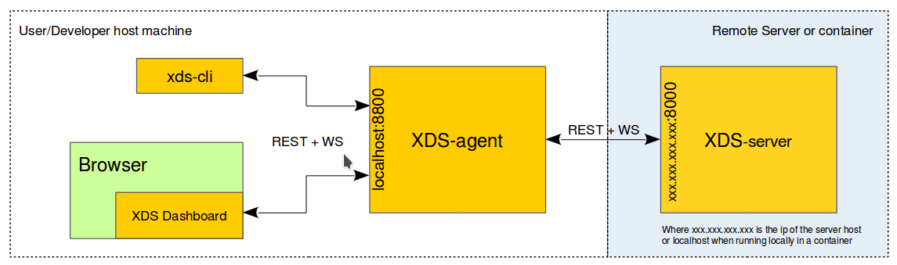

Client Part
The client part of the X(cross) Development System (XDS) is a set of XDS client tools that must run on your development host.
The tools that comprise the client part are: xds-agent, xds-cli, and xds-gdb.
Of the three, only xds-agent, whose source code can be found
here
in Gerrit is required.
NOTE:
The binary version is also available as standard Linux packages or as a portable Windows archive (i.e. Zip).
You should establish the following chain:
- XDS Client: (i.e.
xds-clior XDS Dashboard). - XDS Agent: (
xds-agent) running on your development host. - XDS Server: (
xds-server) running on a remote server and/or in a container.
HTTP and Websocket protocols establish exchanges between these three tools.
You can change the default URL/port shown in the following illustration by using configuration files.

NOTE:
Installation of the XDS client tools xds-cli and xds-gdb is
optional:
- xds-cli : command line tool to used to interact with XDS (also used by IDE integration).
- xds-gdb : requested for debugging application.
Install Packages for Debian
Use the following commands to install packages for the client part on Debian-based systems:
# Set DISTRO (e.g. xUbuntu_16.04, xUbuntu_16.10, xUbuntu_17.04, xUbuntu_18.04, Debian_8.0, Debian_9.0)
export DISTRO="xUbuntu_18.04"
# Set AGL_RELEASE (AGL_ElectricEel, AGL_FunkyFlounder, AGL_Master)
export AGL_RELEASE="AGL_Master"
wget -O - http://download.opensuse.org/repositories/isv:/LinuxAutomotive:/${AGL_RELEASE}/${DISTRO}/Release.key | sudo apt-key add -
sudo bash -c "cat >> /etc/apt/sources.list.d/AGL.list <<EOF
deb http://download.opensuse.org/repositories/isv:/LinuxAutomotive:/${AGL_RELEASE}/${DISTRO}/ ./
EOF"
sudo apt-get update
sudo apt-get install agl-xds-agent
sudo apt-get install agl-xds-cli
sudo apt-get install agl-xds-gdb
Install Packages for OpenSUSE
Use the following commands to install packages for the client part on OpenSUSE-based systems:
# Set DISTRO (openSUSE_Leap_42.3, openSUSE_Leap_15.0, openSUSE_Tumbleweed)
export DISTRO="openSUSE_Leap_15.0"
# Set AGL_RELEASE (AGL_ElectricEel, AGL_FunkyFlounder, AGL_Master)
export AGL_RELEASE="AGL_Master"
sudo zypper ar http://download.opensuse.org/repositories/isv:/LinuxAutomotive:/${AGL_RELEASE}/${DISTRO}/isv:LinuxAutomotive:${AGL_RELEASE}.repo
sudo zypper ref
sudo zypper install agl-xds-agent
sudo zypper install agl-xds-cli
sudo zypper install agl-xds-gdb
Install Packages for Other Platforms (e.g. Windows / MacOS)
-
Follow these steps to install
xds-agent:-
Download the latest released tarball from the GitHub Releases Page.
-
Unzip the tarball anywhere into your local drive (e.g.
/opt/AGL/xdsorC:\AGL\xds). -
Add binary to PATH:
- MacOs: create the .bash_profile
nano .bash_profileand addexport PATH="/opt/AGL/xds/xds-agent:$PATH - Windows: change the system path using the control panel or system settings.
Alternatively, you can
setx path "C:\AGK\xds\xds-agent;%path%"
- MacOs: create the .bash_profile
-
-
If you want to install optional tools, repeat the previous steps for each tool:
xds-cli, which is used for command-line and IDE integration. Downloaded from the (released tarball link).xds-gdb, used for debugging applications. Downloaded from the (released tarball link).
Start xds-agent
As noted earlier, the xds-agent client tool must run on your local
development host when you use XDS.
Depending on your development host, use the following commands:
-
For a Linux-based development host, a user systemd service is provided (i.e.
xds-agent.service).To start this service automatically when your host boots, enable the service using the following command:
# Enable xds-agent service at boot systemctl --user enable xds-agent.serviceTo start the XDS-agent service and display its log, use these commands:
# Manually start xds-agent service systemctl --user start xds-agent.service # Get status and log of xds-agent service systemctl --user status xds-agent.service -
For a MacOS-based host, use the following command to manually start
xds-agent:/opt/AGL/bin/xds-agent -
For a Windows-based host, use the following command to manually start
xds-agent:C:\AGL\xds\xds-agent\xds-agent.exe